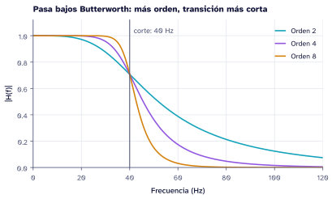
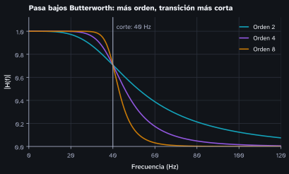

Figuras con la marca en matplotlib
Para qué sirve
Las figuras son la parte de la marca que más se ve en un documento o una diapositiva. El módulo recursos/marca/python/caicedo_mpl.py le pone a matplotlib la misma letra (Atkinson Hyperlegible), los mismos colores y el mismo tamaño de texto que el resto de la marca, sin repetir esos ajustes en cada script. Los colores salen de la misma tabla de tokens que los .scss y los .sty.
Uso
import sys
sys.path.insert(0, "recursos/marca/python") # ruta desde la raíz del proyecto
import matplotlib.pyplot as plt
import caicedo_mpl as cm
cm.usar() # documento, fondo blanco
fig, ax = plt.subplots()
ax.plot(t, x, label="Señal") # primera serie: dato
ax.plot(t, y, label="Filtrada") # segunda: grafo
cm.guardar(fig, "fig/senal") # fig/senal.svg y fig/senal.pdfEn el qmd la figura se enlaza sin extensión: . La opción default-image-extension de cada formato elige el archivo: SVG en HTML y revealjs, PDF en PDF y beamer.
| Llamada | Para |
|---|---|
cm.usar() |
Documentos HTML y PDF, y páginas del sitio |
cm.usar("diapositiva") |
revealjs y beamer en modo claro: letra más grande y trazos más gruesos |
cm.usar("diapositiva", modo="oscuro") |
El modo sala oscura |
El mismo gráfico en los dos modos


Reglas
- Series en orden fijo: dato (turquesa), grafo (violeta) y causa (naranja). Con más de tres series, se agrupan («Otras») o se separan en paneles.
- El naranja es la causa: si una serie es el efecto o la intervención, va en naranja (
cm.T["causa"]). - El texto no lleva el color de la serie: etiquetas y leyendas van en tinta o tenue (
cm.TINTA,cm.TENUE). - Imágenes médicas en gris (
cmap="gray", el predeterminado); magnitudes concm.CMAP_SECUENCIALy diferencias con signo concm.CMAP_DIVERGENTE. - Nada solo por color: cuando dos grupos se comparan, cambian también el marcador o el relleno (lleno y vacío), como en las figuras de riesgo de caída.
Figuras que se regeneran solas
Cada página con figuras tiene su figuras.py al lado del qmd. El script recursos/figuras.py corre antes de cada quarto render (opción pre-render del _quarto.yml) y vuelve a ejecutar solo los figuras.py cuyas salidas son más viejas que el script, los datos de ejemplo o el estilo de la marca. Para forzarlas todas:
python3 recursos/figuras.py --todoCódigo de este ejemplo
"""Figuras del tutorial «Figuras con la marca»: el mismo gráfico en modo claro y oscuro."""
import sys
from pathlib import Path
AQUI = Path(__file__).resolve().parent
RAIZ = next(p for p in AQUI.parents if (p / "_quarto.yml").exists())
sys.path[:0] = [str(RAIZ / "recursos/marca/python"), str(RAIZ / "recursos/python")]
import matplotlib.pyplot as plt
import numpy as np
from scipy import signal
import caicedo_mpl as cm
FIG = AQUI / "fig"
def respuesta(modo, contexto="documento"):
cm.usar(contexto, modo)
fig, ax = plt.subplots(figsize=(6.4, 3.3))
for orden in (2, 4, 8):
b, a = signal.butter(orden, 40, fs=500)
w, h = signal.freqz(b, a, worN=2048, fs=500)
ax.plot(w, np.abs(h), label=f"Orden {orden}")
ax.axvline(40, color=cm.TENUE[modo], lw=1)
ax.annotate("corte: 40 Hz", (40, 1.02), xytext=(5, 0), textcoords="offset points", fontsize=9, color=cm.TENUE[modo])
ax.set_xlim(0, 120); ax.set_ylim(0, 1.12)
ax.set_xlabel("Frecuencia (Hz)"); ax.set_ylabel("|H(f)|")
ax.set_title("Pasa bajos Butterworth: más orden, transición más corta")
ax.legend(loc="upper right")
return fig
def main():
for modo in ("claro", "oscuro"):
fig = respuesta(modo); cm.guardar(fig, FIG / f"ejemplo-{modo}"); plt.close(fig)
if __name__ == "__main__":
main()